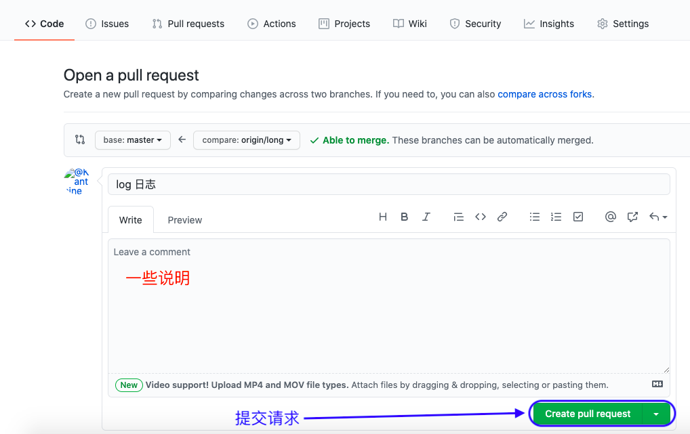

Git常用命令
仓库：每个项目都可以看作一个仓库！仓库管理
- 代码管理：单人项目、或者多人协作开发的项目；
- 进度管理：每提交一次代码，就产生一个时间节点；众多时间点形成一条时间线！
1、配置 Git
1.1、管理工具 Git 的安装
/// Git 官网下载 git 或者使用 brew 下载 Git
MacBook-Pro $ brew install git
/// 查看 Git 版本号：
MacBook-Pro $ git --version
git version 2.30.1 (Apple Git-130)
1.2、查看 Git 的全局配置
MacBook-Pro $ git config --global --list
user.email=123456@qq.com
user.name=nickName
core.excludesfile=/Users/.gitignore_global
difftool.sourcetree.cmd=opendiff "$LOCAL" "$REMOTE"
difftool.sourcetree.path=
mergetool.sourcetree.cmd=/Applications/Sourcetree.app/Contents/Resources/opendiff-w.sh "$LOCAL" "$REMOTE" -ancestor "$BASE" -merge "$MERGED"
mergetool.sourcetree.trustexitcode=true
commit.template=/Users/.stCommitMsg
Git 的用户名 和 邮箱地址 是本地 Git 客户端的一个变量，当安装 Git 后首先要做的事情就是设置本地 用户名 和 邮箱地址 ，因为每次 Git 提交都会使用这个 用户名 和 邮箱地址 来记录提交信息！这些信息不会随着远程仓库的改变而变化！
1.2.1、修改全局 Git 用户名和邮箱
/// 修改全局配置
MacBook-Pro $ git config --global user.name "nickName2"
MacBook-Pro $ git config --global user.email "123456789@qq.com"
1.2.2、查看当前 Git 用户名和邮箱
/// 查看全局配置
MacBook-Pro $ git config user.name
nickName2
MacBook-Pro $ git config user.email
123456789@qq.com
1.3、初始化本地 Git 仓库
MacBook-Pro $ cd /Users/Desktop/GitTest
MacBook-Pro : GitTest $ git init
hint: Using 'master' as the name for the initial branch. This default branch name
hint: is subject to change. To configure the initial branch name to use in all
hint: of your new repositories, which will suppress this warning, call:
hint:
hint: git config --global init.defaultBranch <name>
hint:
hint: Names commonly chosen instead of 'master' are 'main', 'trunk' and
hint: 'development'. The just-created branch can be renamed via this command:
hint:
hint: git branch -m <name>
Initialized empty Git repository in /Users/Desktop/GitTest/.git/
1.3.1、指定仓库的用户名和邮箱
如果希望在不同的项目中使用不同的 用户名 和 邮箱地址 来提交，可以使用下面的方法单独设置 用户名 和 邮箱地址 ，如果不设置就会默认使用上面全局设置的 用户名 和 邮箱地址。
/// 到本地仓库下配置
MacBook-Pro $ cd /Users/Desktop/GitTest
MacBook-Pro : GitTest $ git config user.name "nickName3"
MacBook-Pro : GitTest $ git config user.email “654321@qq.com”
/// 查看配置详情
MacBook-Pro : GitTest $ git config user.name
nickName3
MacBook-Pro : GitTest $ git config user.email
“654321@qq.com”
本地配置的用户名 和 邮箱地址 只是用来记录本地 Git 提交信息的一个标识，和远程仓库账号下的 用户名 或 邮箱地址 没有任何关系。
1.3.2、忽略项目中的某些文件
建立一个 .gitignore 文件，在文件中配置一些无需上传到远程 Git 仓库的内容：
*~
*.DS_Store
*xcuserdata*
*gitconfig
*.diff
build/*
product/*
driveData/*
*.xcuserstate
project.xcworkspace
xcuserdata
UserInterfaceState.xcuserstate
project.xcworkspace/
xcuserdata/
UserInterface.xcuserstate
2、文件操作
通常将本地 Git 仓库分为三个区：
- 本地代码区，
- 暂存区：使用
git add .将写好的代码提交到暂存区，等待推到远程仓库去； - 远程仓库：使用
git commit -m''命令将暂存区代码提交到远程仓库去；
2.1、查看项目状态
使用 git status 可以查看当前的项目状态！
没有任何改动
MacBook-Pro:GitTest $ git status
On branch name
Your branch is up to date with 'origin/name'.
nothing to commit, working tree clean
创建文件 test.md 后的状态
MacBook-Pro :GitTest $ touch test.md
MacBook-Pro :GitTest $ git status
On branch master
No commits yet
Untracked files:
(use "git add <file>..." to include in what will be committed)
test.md
nothing added to commit but untracked files present (use "git add" to track)
2.1.1、文件的添加
/// 使用命令工具添加某个文件
MacBook-Pro :GitTest $ git add test.md
/// 添加仓库中的所有改动
MacBook-Pro :GitTest $ git add .
2.1.2、文件的删除
/// 使用命令工具删除某个文件
MacBook-Pro :GitTest $ git rm test.md
/// 查看与上次提交的不同之处
MacBook-Pro :GitTest $ git diff
2.2、查看提交记录
2.2.1、查找本地过往提交记录
/// 查看全部提交
MacBook-Pro :GitTest $ git log
/// 查看某个人的提交
MacBook-Pro :GitTest $ git log --author name
2.2.2、查看某个文件的提交记录
/// 查看某个文件的提交记录
MacBook-Pro :GitTest $ git log --pretty=oneline test.md
5f6e42605a5a26036452d336fd6f2677adc68bd0 (HEAD -> master) hello2
1acfff2f562645d0103c0e52783d6fc8ef59c8c1 hello
23983f57a6ee316290b6198fbca34a8689254ebb creat test.md
2.2.3、查看某次提交记录的详情
/// 查看某次提交记录的详情
MacBook-Pro:GitTest $ git show 1acfff2f562645d0103c0e52783d6fc8ef59c8c1
commit 1acfff2f562645d0103c0e52783d6fc8ef59c8c1
Author: nickName3 <“654321@qq.com”>
Date: Fri Oct 29 09:55:23
hello
diff --git a/test.md b/test.md
index e69de29..c1bf8ad 100644
--- a/test.md
+++ b/test.md
@@ -0,0 +1 @@
+Hello Word
2.2.4、查看某个文件的具体修改记录
/// 查看修改的具体详情
MacBook-Pro:GitTest $ git log -p home/test.md
commit 5f6e42605a5a26036452d336fd6f2677adc68bd0 (HEAD -> master)
Author: nickName3 <“654321@qq.com”>
Date: Fri Oct 29 09:56:00 2021 +0800
hello2
diff --git a/test.md b/test.md
index c1bf8ad..e9d56ca 100644
--- a/test.md
+++ b/test.md
@@ -1 +1,3 @@
Hello Word
+
+Hello Word2
commit 1acfff2f562645d0103c0e52783d6fc8ef59c8c1
Author: nickName3 <“654321@qq.com”>
Date: Fri Oct 29 09:55:23 2021 +0800
hello
diff --git a/test.md b/test.md
2.3、文件还原
2.3.1、回退某个文件到上一次提交记录
/// 将某个文件还原到上一次提交的状态
MacBook-Pro:GitTest $ git checkout -- home/test.md
2.3.2、整个项目回退到某个版本
/// 回退到上一版本：一个 ^ 代表一个版本，回到到前两次版本 ^^
MacBook-Pro:GitTest $ git reset --hard HEAD^
/// 回退到指定版本： 使用 commit ID 寻找某一版本
MacBook-Pro:GitTest $ git reset --hard ff3e0742bfae4303
2.3.3、某一文件回退到某个版本
可能在某些时候，你并不希望将整个版本回退到某个版本，而仅仅希望对某个文件做回退操作！
/// 查看版本提交记录
MacBook-Pro:GitTest $ git log
commit 23983f57a6ee316290b6198fbca34a8689254ebb (HEAD -> master)
Author: nickName3 <“654321@qq.com”>
Date: Fri Oct 29 09:53:47
creat test.md
/// 将指定文件回退到指定版本
MacBook-Pro:GitTest $ git checkout 1acfff2f562645d0103c0e52783d6fc8ef59c8c1 -- test.md
2.4、文件追踪
文件追踪：如果将代码加入到暂存区，Git 就会实现对这个文件的追踪，就无法进行还原操作！
/// 先将修改的文件加入暂存区
MacBook-Pro:GitTest $ git add test.md
/// 此时无法将某个文件还原到上一次提交的状态
MacBook-Pro:GitTest $ git checkout -- home/test.md
/// 也即是说：Git 对该文件实现了追踪，不允许回到原来状态
2.4.1、撤销文件追踪
某些时候，我们不希望 Git 追踪暂存区的代码，这时候可以撤销追踪
/// 撤销对文件 test.md 的追踪
MacBook-Pro:GitTest $ git reset HEAD home/test.md
2.5、为每一个版本打标签 tag
/// 列出所有标签
MacBook-Pro:GitTest $ git tag
/// 新建tag
MacBook-Pro:GitTest $ git tag V1.0.0
/// 推送tag到远程
MacBook-Pro:GitTest $ git push origin V1.0.0
/// 本地删除某个标签
MacBook-Pro:GitTest $ git tag -d V1.0.0
/// 远程删除 tag
MacBook-Pro:GitTest $ git push origin :refs/tags/V1.0.0
3、分支
分支：需要完成某项工作时，从主线中脱离出来的一条支线；由支线完成单独的功能，最终再将支线合并到主线上！
3.1、创建分支
/// 新建一个本地分支
MacBook-Pro:GitTest $ git checkout -b L2
/// 把新建的本地分支push到远程服务器
MacBook-Pro:GitTest $ git push origin L2:L2
/// 新建本地分支，并切换到远程分支
MacBook-Pro:GitTest $ git checkout -b local/2 origin/0.0.2
/// 拉取远程分支到本地
MacBook-Pro:GitTest $ git fetch
注意：创建一个本地分支时，将当前分支拷贝至新创建的分支，此时也会将当前分支的 git commit 的文件拷贝至新的分支！
3.2、查看分支
/// 查看本地分支
MacBook-Pro:GitTest $ git branch
///查看远程分支
MacBook-Pro:GitTest $ git branch -r
/// 查看所有分支
MacBook-Pro:GitTest $ git branch -a
3.2.1、切换分支
/// 切换本地分支
MacBook-Pro:GitTest $ git checkout master
3.3、删除分支
注意：不能删除当前分支！
-d删除某个分支-D强制删除某个分支
如果某个分支有 git commit 操作 ，也是不能删除的！
/// 删除本地分支
MacBook-Pro:GitTest $ git branch -D L3
/// 删除远程分支
MacBook-Pro:GitTest $ git push origin --delete L4
3.4、合并分支
切换到分支 L1，然后将分支 L2 的改变合并到 L1 ！
MacBook-Pro:GitTest $ git checkout L1
Switched to branch 'L1'
MacBook-Pro:GitTest $ git merge L2
Merge made by the 'recursive' strategy.
3.4.1、合并冲突
当在不同的分支修改同一处代码时，将这两个分支合并，就可能碰到合并冲突！
<<<<<<< HEAD (当前分支的更改)
Hello
=======
Word
>>>>>>> L1 (传入分支的更改)
解决方案一：忽略其他分支的修改
当遇到合并冲突时，其中一个解决方案是忽略其它分支的修改，保留当前分支！
MacBook-Pro:GitTest $ git merge --abort
解决方案二：手动解决冲突
删除 <<<<<<< HEAD 等特殊符号，代码视情况保存！修改完代码后将新的代码提交 git commit!
3.4.2、合并某次提交
将历史上某次提交合并到指定分支!
/// 查找需要合并的commit记录
MacBook-Pro:GitTest $ git log
/// 将 8a645bf5 提交合并到当前分支
MacBook-Pro:GitTest $ git cherry-pick 8a645bf5
3.5、查看版本路线
/// 查看当前分支的所有提交记录
MacBook-Pro:GitTest $ git log
/// 查看提交记录的简要信息
MacBook-Pro:GitTest $ git log --oneline
/// 查看当前版本路线
MacBook-Pro:GitTest $ git log --oneline --graph
* 196b56b2 (HEAD -> L1, origin/L1) 提交摘要信息
* 15c8da07 (origin/master, origin/HEAD, master) Merge branch 'L1' into 'master'
|\
| * 1f0f75ec 提交摘要信息
|\|
3.6、其它操作
拉取远程分支
///拉取远程某个分支
MacBook-Pro:GitTest $ git clone -b 分支名 git仓库
4、pull 命令
///将与本地当前分支同名的远程分支 拉取到 本地当前分支上
MacBook-Pro:GitTest $ git pull
/// 将远程指定分支 拉取到 本地当前分支上
MacBook-Pro:GitTest $ git pull origin <远程分支名>
/// 将远程指定分支 拉取到 本地指定分支上
MacBook-Pro:GitTest $ git pull origin <远程分支名>:<本地分支名>
4.1、回退到 pull 之前
/// 查看提交记录
MacBook-Pro:GitTest $ git reflog
/// 回退到某一版本
MacBook-Pro:GitTest $ git reset --hard 70973042
5、push 命令
/// 将本地当前分支 推送到 与本地当前分支同名的远程分支上
MacBook-Pro:GitTest $ git push
/// 将本地当前分支 推送到 远程指定分支上
MacBook-Pro:GitTest $ git push origin <本地分支名>:<远程分支名>
/// 将本地当前分支 推送到 与本地当前分支同名的远程分支上
MacBook-Pro:GitTest $ git push origin <本地分支名>
5.1、回退到本地某个版本
/// 查看历史提交
MacBook-Pro:GitTest $ git log
commit 12caba23700c057a (HEAD -> branch, origin/branch)
代码1
commit 4d4d5ad55045ddbc (HEAD -> branch, origin/branch)
代码2
commit ff3e0742bfae4303 (HEAD -> branch, origin/branch)
代码3
/// 本地回退到代码 3
MacBook-Pro:GitTest $ git reset --hard ff3e0742bfae4303
HEAD is now at 4d4d5ad5 代码3
/// 强制同步远程仓库的分支
MacBook-Pro:GitTest $ git push origin branch -f
6、Pull Request
Github 的 Pull Request 功能，简写为 PR；适用于多人合作的项目！
6.1、什么是 Pull Request
Pull Request 是一种通知机制。你修改了他人的代码，将你的修改通知原来的作者，希望他合并你的修改，这就是 Pull Request。
Pull Request 本质上是一种软件的合作方式，是将涉及不同功能的代码，纳入主干的一种流程。这个过程中，还可以进行讨论、审核和修改代码。
注意：GitHub 的代码贡献，是请求别人 pull 你的代码，而不是请求别人接受你的 push。因为对应的 git 操作必须是 pull 而不能是 push，所以叫 pull request 而不是 push request。
6.2、 Pull Request 的流程
- 第一步，在 Git 仓库创建自己的分支！
- 第二步，在修改后的分支上，按下
New pull request按钮。
这时，会进入一个新页面，有 Base 和 Head 两个选项。Base 是你希望提交变更的目标，Head 是目前包含你的变更的那个分支或仓库。
- 第三步，填写说明，帮助别人理解你的提交，然后按下
create pull request按钮即可。

PR创建提交后，管理者就要决定是否接受该PR。
参考文章